CODING AGENTS AS PIXEL WORLD MODELS
traex/DeepSeek-V4.1-Flash · common50_0039
点击播放 · 原生 RGB 像素
逐轮保存的候选
回放视频、检查图与代码变化。
每份候选均可单独播放。实际图片检查记录在下方工具轨迹中。
候选 01播放与检查图
点击播放 · 原生 RGB 像素

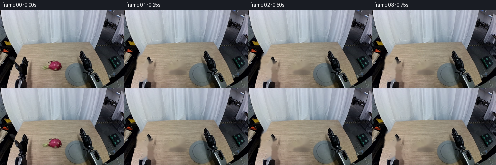
展开代码变化
--- 上一保存版本
+++ 本次保存版本
@@ -0,0 +1,297 @@
+from pathlib import Path
+
+import cv2
+import numpy as np
+from PIL import Image
+
+import artifact_io
+
+
+ROOT = Path(__file__).resolve().parent
+W, H, N, FPS = 256, 160, 20, 4
+
+
+def smoothstep(value):
+ value = np.clip(value, 0.0, 1.0)
+ return value * value * (3.0 - 2.0 * value)
+
+
+def stage(frame, start, end, a, b):
+ if frame <= start:
+ return a
+ if frame >= end:
+ return b
+ return a + (b - a) * smoothstep((frame - start) / (end - start))
+
+
+def matte_from_mask(mask, feather=0.75):
+ alpha = (mask.astype(np.float32) * 255.0).astype(np.uint8)
+ if feather:
+ alpha = cv2.GaussianBlur(alpha, (0, 0), feather)
+ return alpha.astype(np.float32) / 255.0
+
+
+def fruit_matte(image):
+ hsv = cv2.cvtColor(image, cv2.COLOR_BGR2HSV)
+ b, g, r = cv2.split(image)
+ hue, sat, val = cv2.split(hsv)
+
+ red = ((hue > 148) & (sat > 68) & (val > 35)) | (
+ (hue < 13) & (sat > 82) & (r.astype(np.int16) > g.astype(np.int16) + 12)
+ )
+ green = (
+ (hue >= 23)
+ & (hue <= 58)
+ & (sat > 52)
+ & (g.astype(np.int16) > b.astype(np.int16) + 6)
+ )
+ dark_flesh = (val < 112) & (sat > 55) & (r > g)
+
+ candidate = (red | green | dark_flesh).astype(np.uint8)
+ region = np.zeros((H, W), np.uint8)
+ polygon = np.array(
+ [[84, 109], [89, 105], [99, 103], [112, 103], [123, 105],
+ [128, 111], [127, 120], [122, 125], [108, 127], [96, 124],
+ [88, 122], [84, 116]],
+ np.int32,
+ )
+ cv2.fillPoly(region, [polygon], 255)
+ candidate &= region
+ candidate = cv2.morphologyEx(candidate, cv2.MORPH_CLOSE, np.ones((3, 3), np.uint8))
+
+ contours, _ = cv2.findContours(candidate, cv2.RETR_EXTERNAL, cv2.CHAIN_APPROX_SIMPLE)
+ mask = np.zeros((H, W), np.uint8)
+ for contour in contours:
+ if cv2.contourArea(contour) >= 7:
+ cv2.drawContours(mask, [contour], -1, 255, cv2.FILLED)
+
+ # The small green scales are part of the fruit silhouette, but they are
+ # separated by low-saturation table pixels in a few places.
+ green_contours, _ = cv2.findContours(green.astype(np.uint8), cv2.RETR_EXTERNAL, cv2.CHAIN_APPROX_SIMPLE)
+ for contour in green_contours:
+ x, y, w, h = cv2.boundingRect(contour)
+ if 84 <= x <= 127 and 102 <= y <= 126 and cv2.contourArea(contour) >= 2:
+ cv2.drawContours(mask, [contour], -1, 255, cv2.FILLED)
+
+ mask = cv2.morphologyEx(mask, cv2.MORPH_CLOSE, np.ones((3, 3), np.uint8))
+ # Fill pinholes inside the colored fruit body without adding its table shadow.
+ flood = mask.copy()
+ flood[:102] = 0
+ flood[128:] = 0
+ flood[:, :83] = 0
+ flood[:, 129:] = 0
+ contours, _ = cv2.findContours(flood, cv2.RETR_EXTERNAL, cv2.CHAIN_APPROX_SIMPLE)
+ filled = np.zeros_like(mask)
+ for contour in contours:
+ if cv2.contourArea(contour) >= 20:
+ cv2.drawContours(filled, [contour], -1, 255, cv2.FILLED)
+ mask = cv2.bitwise_or(mask, filled)
+ return mask
+
+
+def hand_matte(image):
+ gray = cv2.cvtColor(image, cv2.COLOR_BGR2GRAY)
+ hsv = cv2.cvtColor(image, cv2.COLOR_BGR2HSV)
+ hue, sat, val = cv2.split(hsv)
+
+ region = np.zeros((H, W), np.uint8)
+ polygon = np.array(
+ [[20, 88], [27, 86], [36, 91], [46, 98], [57, 109],
+ [67, 124], [75, 146], [75, 151], [29, 151], [26, 137],
+ [22, 118], [18, 103]],
+ np.int32,
+ )
+ cv2.fillPoly(region, [polygon], 255)
+
+ dark = ((gray < 112) & (sat < 122)) | (gray < 66)
+ mask = (dark & (region > 0)).astype(np.uint8)
+ mask = cv2.morphologyEx(mask, cv2.MORPH_CLOSE, np.ones((3, 3), np.uint8))
+ mask = cv2.morphologyEx(mask, cv2.MORPH_OPEN, np.ones((2, 2), np.uint8))
+
+ # Keep all substantial connected pieces of the hand; this preserves the
+ # individual black fingers and the highlighted metal palm.
+ count, labels, stats, _ = cv2.connectedComponentsWithStats(mask)
+ clean = np.zeros_like(mask)
+ for label in range(1, count):
+ if stats[label, cv2.CC_STAT_AREA] >= 5:
+ clean[labels == label] = 255
+ clean[152:] = 0
+ return clean
+
+
+def layer_from_mask(image, mask, feather):
+ alpha = matte_from_mask(mask, feather)
+ rgba = np.dstack([image.astype(np.float32), alpha * 255.0])
+ return rgba, alpha
+
+
+def warp_layer(layer, angle=0.0, tx=0.0, ty=0.0, center=(0.0, 0.0)):
+ matrix = cv2.getRotationMatrix2D(center, angle, 1.0)
+ matrix[0, 2] += tx
+ matrix[1, 2] += ty
+ return cv2.warpAffine(
+ layer,
+ matrix,
+ (W, H),
+ flags=cv2.INTER_LINEAR,
+ borderMode=cv2.BORDER_CONSTANT,
+ borderValue=(0, 0, 0, 0),
+ )
+
+
+def composite_layer(canvas, layer):
+ color = layer[:, :, :3].astype(np.float32)
+ alpha = np.clip(layer[:, :, 3:4].astype(np.float32) / 255.0, 0.0, 1.0)
+ canvas[:] = canvas.astype(np.float32) * (1.0 - alpha) + color * alpha
+
+
+def draw_shadow(canvas, center, size, opacity, softness):
+ x, y = center
+ sx, sy = size
+ shadow = np.zeros((H, W), np.float32)
+ cv2.ellipse(shadow, (int(round(x)), int(round(y))), (int(sx), int(sy)), 0, 0, 360, 1.0, -1)
+ sigma = max(0.6, softness)
+ shadow = cv2.GaussianBlur(shadow, (0, 0), sigma)
+ shadow *= opacity
+ dark = np.array([47.0, 46.0, 44.0], np.float32)
+ canvas[:] = canvas.astype(np.float32) * (1.0 - shadow[:, :, None]) + dark * shadow[:, :, None]
+
+
+def make_background(image, fruit_mask, hand_mask):
+ shadow_mask = np.zeros((H, W), np.uint8)
+ cv2.ellipse(shadow_mask, (106, 124), (24, 7), 0, 0, 360, 255, -1)
+ remove = cv2.bitwise_or(cv2.dilate(fruit_mask, np.ones((3, 3), np.uint8)), shadow_mask)
+ remove = cv2.bitwise_or(remove, cv2.dilate(hand_mask, np.ones((3, 3), np.uint8)))
+ background = cv2.inpaint(image, remove, 3, cv2.INPAINT_TELEA)
+
+ # Restore the permanent lower arm and the far-left machinery after the
+ # foreground hand has been removed.
+ keep = np.zeros((H, W), np.uint8)
+ cv2.fillPoly(
+ keep,
+ [np.array([[0, 0], [21, 0], [21, 160], [0, 160]], np.int32)],
+ 255,
+ )
+ cv2.fillPoly(
+ keep,
+ [np.array([[28, 148], [75, 148], [75, 160], [28, 160]], np.int32)],
+ 255,
+ )
+ keep = cv2.erode(keep, np.ones((3, 3), np.uint8))
+ background[keep > 0] = image[keep > 0]
+ return background
+
+
+def make_frames():
+ image = np.asarray(Image.open(ROOT / "first_frame.png").convert("RGB"))
+ bgr = cv2.cvtColor(image, cv2.COLOR_RGB2BGR)
+
+ fruit_mask = fruit_matte(bgr)
+ hand_mask = hand_matte(bgr)
+ fruit_rgba, _ = layer_from_mask(bgr, fruit_mask, feather=0.55)
+ hand_rgba, _ = layer_from_mask(bgr, hand_mask, feather=0.45)
+ finger_mask = hand_mask.copy()
+ finger_mask[120:] = 0
+ finger_rgba, _ = layer_from_mask(bgr, finger_mask, feather=0.4)
+ background = make_background(bgr, fruit_mask, hand_mask)
+
+ ys, xs = np.where(fruit_mask > 0)
+ source_center = (float(xs.mean()), float(ys.mean()))
+
+ frames = []
+ for frame in range(N):
+ if frame == 0:
+ frames.append(image.copy())
+ continue
+
+ canvas = background.copy()
+
+ # Hand reaches toward the fruit, closes around its left edge, then
+ # lifts while remaining anchored at the wrist.
+ hand_angle = stage(frame, 1, 5, 0.0, -10.5)
+ hand_angle = stage(frame, 5, 9, hand_angle, -14.0)
+ hand_angle = stage(frame, 9, 16, hand_angle, -9.0)
+ hand_lift = stage(frame, 9, 16, 0.0, -6.0)
+ hand_lift = stage(frame, 16, 19, hand_lift, -7.0)
+
+ # The fruit is stationary until the hand is in reach, then slides
+ # across the table as one rigid body and rises with the gripper.
+ fruit_x = stage(frame, 5, 10, source_center[0], 68.0)
+ fruit_y = stage(frame, 5, 10, source_center[1], 109.5)
+ fruit_x = stage(frame, 10, 16, fruit_x, 64.0)
+ fruit_y = stage(frame, 10, 16, fruit_y, 91.0)
+ fruit_x = stage(frame, 16, 19, fruit_x, 64.5)
+ fruit_y = stage(frame, 16, 19, fruit_y, 90.0)
+ fruit_angle = stage(frame, 5, 10, 0.0, 5.0)
+ fruit_angle = stage(frame, 10, 16, fruit_angle, -4.0)
+ fruit_angle = stage(frame, 16, 19, fruit_angle, -3.0)
+
+ # Contact shadow follows the object; it broadens and fades as the
+ # fruit leaves the table.
+ shadow_opacity = stage(frame, 5, 10, 0.26, 0.24)
+ shadow_opacity = stage(frame, 10, 16, shadow_opacity, 0.13)
+ shadow_size_x = stage(frame, 5, 16, 19.0, 22.0)
+ shadow_size_y = stage(frame, 5, 16, 5.0, 7.0)
+ shadow_soft = stage(frame, 5, 16, 1.6, 3.4)
+ draw_shadow(
+ canvas,
+ (fruit_x + 1.0, fruit_y + 12.5),
+ (shadow_size_x, shadow_size_y),
+ shadow_opacity,
+ shadow_soft,
+ )
+
+ fruit_transform = warp_layer(
+ fruit_rgba,
+ angle=fruit_angle,
+ tx=fruit_x - source_center[0],
+ ty=fruit_y - source_center[1],
+ center=source_center,
+ )
+ composite_layer(canvas, fruit_transform)
+
+ moved_hand = warp_layer(
+ hand_rgba,
+ angle=hand_angle,
+ tx=0.0,
+ ty=hand_lift,
+ center=(53.0, 146.0),
+ )
+ composite_layer(canvas, moved_hand)
+
+ # The finger group closes slightly more than the palm during contact.
+ grip = stage(frame, 5, 8, 0.0, -5.0)
+ grip = stage(frame, 8, 16, grip, -7.0)
+ moved_fingers = warp_layer(
+ finger_rgba,
+ angle=hand_angle + grip,
+ tx=0.0,
+ ty=hand_lift,
+ center=(53.0, 146.0),
+ )
+ composite_layer(canvas, moved_fingers)
+
+ frames.append(np.clip(np.rint(canvas[:, :, ::-1]), 0, 255).astype(np.uint8))
+
+ return np.stack(frames)
+
+
+def main():
+ frames = make_frames()
+ artifact_io.save(frames, ROOT)
+
+ video_path = ROOT / "video.mp4"
+ writer = cv2.VideoWriter(
+ str(video_path),
+ cv2.VideoWriter_fourcc(*"mp4v"),
+ FPS,
+ (W, H),
+ )
+ for frame in frames:
+ writer.write(cv2.cvtColor(frame, cv2.COLOR_RGB2BGR))
+ writer.release()
+ print(f"saved {len(frames)} RGB frames and {video_path.name}")
+
+
+if __name__ == "__main__":
+ main()
候选 02播放与检查图
点击播放 · 原生 RGB 像素
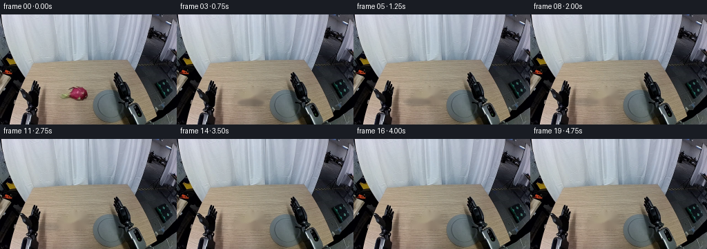
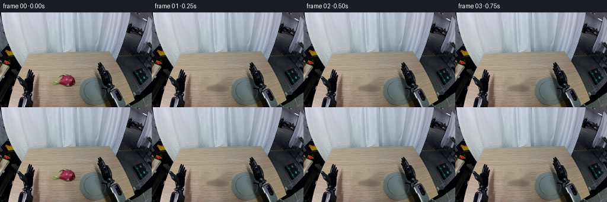
展开代码变化
--- 上一保存版本
+++ 本次保存版本
@@ -86,6 +86,7 @@
if cv2.contourArea(contour) >= 20:
cv2.drawContours(filled, [contour], -1, 255, cv2.FILLED)
mask = cv2.bitwise_or(mask, filled)
+ mask = cv2.morphologyEx(mask, cv2.MORPH_CLOSE, np.ones((5, 3), np.uint8))
return mask
@@ -121,7 +122,8 @@
def layer_from_mask(image, mask, feather):
alpha = matte_from_mask(mask, feather)
- rgba = np.dstack([image.astype(np.float32), alpha * 255.0])
+ premultiplied = image.astype(np.float32) * alpha[:, :, None]
+ rgba = np.dstack([premultiplied, alpha * 255.0])
return rgba, alpha
@@ -140,9 +142,9 @@
def composite_layer(canvas, layer):
- color = layer[:, :, :3].astype(np.float32)
+ premultiplied = layer[:, :, :3].astype(np.float32)
alpha = np.clip(layer[:, :, 3:4].astype(np.float32) / 255.0, 0.0, 1.0)
- canvas[:] = canvas.astype(np.float32) * (1.0 - alpha) + color * alpha
+ canvas[:] = canvas.astype(np.float32) * (1.0 - alpha) + premultiplied
def draw_shadow(canvas, center, size, opacity, softness):
@@ -157,28 +159,11 @@
canvas[:] = canvas.astype(np.float32) * (1.0 - shadow[:, :, None]) + dark * shadow[:, :, None]
-def make_background(image, fruit_mask, hand_mask):
+def make_background(image, fruit_mask):
shadow_mask = np.zeros((H, W), np.uint8)
cv2.ellipse(shadow_mask, (106, 124), (24, 7), 0, 0, 360, 255, -1)
remove = cv2.bitwise_or(cv2.dilate(fruit_mask, np.ones((3, 3), np.uint8)), shadow_mask)
- remove = cv2.bitwise_or(remove, cv2.dilate(hand_mask, np.ones((3, 3), np.uint8)))
background = cv2.inpaint(image, remove, 3, cv2.INPAINT_TELEA)
-
- # Restore the permanent lower arm and the far-left machinery after the
- # foreground hand has been removed.
- keep = np.zeros((H, W), np.uint8)
- cv2.fillPoly(
- keep,
- [np.array([[0, 0], [21, 0], [21, 160], [0, 160]], np.int32)],
- 255,
- )
- cv2.fillPoly(
- keep,
- [np.array([[28, 148], [75, 148], [75, 160], [28, 160]], np.int32)],
- 255,
- )
- keep = cv2.erode(keep, np.ones((3, 3), np.uint8))
- background[keep > 0] = image[keep > 0]
return background
@@ -187,13 +172,20 @@
bgr = cv2.cvtColor(image, cv2.COLOR_RGB2BGR)
fruit_mask = fruit_matte(bgr)
- hand_mask = hand_matte(bgr)
fruit_rgba, _ = layer_from_mask(bgr, fruit_mask, feather=0.55)
- hand_rgba, _ = layer_from_mask(bgr, hand_mask, feather=0.45)
- finger_mask = hand_mask.copy()
- finger_mask[120:] = 0
+ background = make_background(bgr, fruit_mask)
+
+ # Only the near finger is re-composited over the fruit at the end. The
+ # rest of the robot stays pixel-stable throughout the sequence.
+ finger_mask = hand_matte(bgr)
+ finger_region = np.zeros((H, W), np.uint8)
+ cv2.fillPoly(
+ finger_region,
+ [np.array([[43, 94], [60, 94], [61, 128], [43, 128]], np.int32)],
+ 255,
+ )
+ finger_mask &= finger_region
finger_rgba, _ = layer_from_mask(bgr, finger_mask, feather=0.4)
- background = make_background(bgr, fruit_mask, hand_mask)
ys, xs = np.where(fruit_mask > 0)
source_center = (float(xs.mean()), float(ys.mean()))
@@ -206,33 +198,26 @@
canvas = background.copy()
- # Hand reaches toward the fruit, closes around its left edge, then
- # lifts while remaining anchored at the wrist.
- hand_angle = stage(frame, 1, 5, 0.0, -10.5)
- hand_angle = stage(frame, 5, 9, hand_angle, -14.0)
- hand_angle = stage(frame, 9, 16, hand_angle, -9.0)
- hand_lift = stage(frame, 9, 16, 0.0, -6.0)
- hand_lift = stage(frame, 16, 19, hand_lift, -7.0)
-
- # The fruit is stationary until the hand is in reach, then slides
- # across the table as one rigid body and rises with the gripper.
- fruit_x = stage(frame, 5, 10, source_center[0], 68.0)
- fruit_y = stage(frame, 5, 10, source_center[1], 109.5)
- fruit_x = stage(frame, 10, 16, fruit_x, 64.0)
- fruit_y = stage(frame, 10, 16, fruit_y, 91.0)
- fruit_x = stage(frame, 16, 19, fruit_x, 64.5)
- fruit_y = stage(frame, 16, 19, fruit_y, 90.0)
- fruit_angle = stage(frame, 5, 10, 0.0, 5.0)
- fruit_angle = stage(frame, 10, 16, fruit_angle, -4.0)
- fruit_angle = stage(frame, 16, 19, fruit_angle, -3.0)
+ # The fixed left gripper receives the fruit. A curved slide brings
+ # it into the open fingers, followed by a short lift and settle.
+ fruit_x = stage(frame, 2, 6, source_center[0], 88.0)
+ fruit_y = stage(frame, 2, 6, source_center[1], 114.0)
+ fruit_x = stage(frame, 6, 10, fruit_x, 70.0)
+ fruit_y = stage(frame, 6, 10, fruit_y, 115.5)
+ fruit_x = stage(frame, 10, 14, fruit_x, 52.0)
+ fruit_y = stage(frame, 10, 14, fruit_y, 117.0)
+ fruit_x = stage(frame, 14, 17, fruit_x, 51.0)
+ fruit_y = stage(frame, 14, 17, fruit_y, 114.0)
+ fruit_angle = stage(frame, 10, 14, 0.0, 2.5)
+ fruit_angle = stage(frame, 14, 17, fruit_angle, 1.0)
# Contact shadow follows the object; it broadens and fades as the
# fruit leaves the table.
- shadow_opacity = stage(frame, 5, 10, 0.26, 0.24)
- shadow_opacity = stage(frame, 10, 16, shadow_opacity, 0.13)
- shadow_size_x = stage(frame, 5, 16, 19.0, 22.0)
- shadow_size_y = stage(frame, 5, 16, 5.0, 7.0)
- shadow_soft = stage(frame, 5, 16, 1.6, 3.4)
+ shadow_opacity = stage(frame, 2, 10, 0.27, 0.21)
+ shadow_opacity = stage(frame, 10, 17, shadow_opacity, 0.10)
+ shadow_size_x = stage(frame, 2, 17, 19.0, 20.0)
+ shadow_size_y = stage(frame, 2, 17, 5.0, 6.5)
+ shadow_soft = stage(frame, 2, 17, 1.6, 3.2)
draw_shadow(
canvas,
(fruit_x + 1.0, fruit_y + 12.5),
@@ -250,26 +235,8 @@
)
composite_layer(canvas, fruit_transform)
- moved_hand = warp_layer(
- hand_rgba,
- angle=hand_angle,
- tx=0.0,
- ty=hand_lift,
- center=(53.0, 146.0),
- )
- composite_layer(canvas, moved_hand)
-
- # The finger group closes slightly more than the palm during contact.
- grip = stage(frame, 5, 8, 0.0, -5.0)
- grip = stage(frame, 8, 16, grip, -7.0)
- moved_fingers = warp_layer(
- finger_rgba,
- angle=hand_angle + grip,
- tx=0.0,
- ty=hand_lift,
- center=(53.0, 146.0),
- )
- composite_layer(canvas, moved_fingers)
+ if frame >= 12:
+ composite_layer(canvas, finger_rgba)
frames.append(np.clip(np.rint(canvas[:, :, ::-1]), 0, 255).astype(np.uint8))
可观测工具轨迹
实际执行的命令与返回图片。
命令 1exit 0
/bin/bash -c "pwd && rg --files -g '"'!*__pycache__*'"' | sed -n '1,120p'"
命令 2exit 0
/bin/bash -c 'cat prompt.txt'
命令 3exit 0
/bin/bash -c 'cat GENERATION_RULES.md'
命令 4exit 0
/bin/bash -c "find . -maxdepth 2 -type f -printf '%p %s bytes\\n' | sort"
命令 5exit 0
/bin/bash -c "cat task_spec.json && sed -n '1,240p' artifact_io.py"
命令 6exit 0
/bin/bash -c "python - <<'PY'
from PIL import Image
im=Image.open('first_frame.png')
print(im.mode, im.size)
PY"命令 7exit 0
/bin/bash -c "sed -n '1,260p' player_template.html"
命令 8exit 0
/bin/bash -c "python - <<'PY'
from PIL import Image
im=Image.open('first_frame.png')
im.crop((20,70,130,150)).resize((660,480)).save('.tmp/crop_left.png')
im.crop((70,85,125,140)).resize((550,550)).save('.tmp/crop_fruit.png')
PY"命令 9exit 0
/bin/bash -c "python - <<'PY'
try:
import cv2; print('cv2', cv2.__version__)
except Exception as e: print('no cv2',e)
try:
import scipy; print('scipy',scipy.__version__)
except Exception as e: print('no scipy',e)
PY"命令 10exit 0
/bin/bash -c "python - <<'PY'
from PIL import Image
im=Image.open('first_frame.png')
im.crop((150,75,225,160)).resize((600,680)).save('.tmp/crop_right.png')
PY"命令 11exit 0
/bin/bash -c "python - <<'PY'
import cv2, numpy as np
im=cv2.imread('first_frame.png'); hsv=cv2.cvtColor(im,cv2.COLOR_BGR2HSV)
for x,y in [(100,110),(105,100),(95,120),(116,113),(92,126),(82,122),(120,100),(100,130),(70,100),(40,100),(130,130),(150,120)]:
print((x,y),'rgb',im[y,x][::-1],'hsv',hsv[y,x])
# mask stats bbox
roi=hsv[90:135,80:130]
for s in [70,80,90,100,110,120]:
m=(roi[:,:,1]>s)
ys,xs=np.where(m)
print('sat',s,'n',m.sum(),'bbox', (xs.min()+80,ys.min()+90,xs.max()+80,ys.max()+90))
PY"命令 12exit 0
/bin/bash -c "python - <<'PY'
import cv2,numpy as np
im=cv2.imread('first_frame.png'); hsv=cv2.cvtColor(im,cv2.COLOR_BGR2HSV)
# dark object pixels by saturation or dark, local fruit bbox x84-128 y102-127
for y in range(100,130,3):
print(y,[(x,tuple(im[y,x][::-1])) for x in range(82,130,5)])
PY"命令 13exit 0
/bin/bash -c "python - <<'PY'
import cv2, numpy as np
from PIL import Image
im=cv2.imread('first_frame.png')
# Fruit grabcut in ROI
x0,y0,x1,y1=80,98,132,132
roi=im[y0:y1,x0:x1].copy(); H,W=roi.shape[:2]
mask=np.zeros((H,W),np.uint8)
mask[:]=cv2.GC_BGD
mask[6:H-3,4:W-2]=cv2.GC_PR_BGD
mask[8:H-5,7:W-4]=cv2.GC_PR_FGD
mask[10:H-7,10:W-6]=cv2.GC_FGD
bgd=np.zeros((1,65),np.float64); fgd=np.zeros((1,65),np.float64)
cv2.grabCut(roi,mask,None,bgd,fgd,7,cv2.GC_INIT_WITH_MASK)
fm=np.isin(mask,[cv2.GC_FGD,cv2.GC_PR_FGD]).astype(np.uint8)
# preserve based color within mask
hsv=cv2.cvtColor(roi,cv2.COLOR_BGR2HSV); b,g,r=cv2.split(roi)
col=((hsv[:,:,1]>70)&(hsv[:,:,2]>35)) | ((r.astype(int)-g.astype(int)>12)&(r.astype(int)-b.astype(int)>8)) | ((g.astype(int)>r.astype(int)+4)&(g.astype(int)>b.astype(int)+8))
fm2=(fm & col).astype(np.uint8)
fm2=cv2.morphologyEx(fm2,cv2.MORPH_CLOSE,np.ones((3,3),np.uint8))
fm2=cv2.morphologyEx(fm2,cv2.MORPH_OPEN,np.ones((2,2),np.uint8))
# components around center
n,lab,stats,cent=cv2.connectedComponentsWithStats(fm2)
keep=np.zeros_like(fm2)
for i in range(1,n):
if stats[i,cv2.CC_STAT_AREA]>4: keep[lab==i]=1
fm2=keep
# alpha display magenta background
out=roi.copy(); out[fm2==0]=(255,0,255); cv2.imwrite('.tmp/fruit_mask.png',cv2.resize(out,None,fx=8,fy=8,interpolation=cv2.INTER_NEAREST))
print('fruit n',fm2.sum(),'bbox',cv2.boundingRect(fm2))
# Left gripper segmentation threshold dark in polygon
x0,y0,x1,y1=18,82,80,160
roi=im[y0:y1,x0:x1].copy(); H,W=roi.shape[:2]
hsv=cv2.cvtColor(roi,cv2.COLOR_BGR2HSV); gray=cv2.cvtColor(roi,cv2.COLOR_BGR2GRAY)
poly=np.zeros((H,W),np.uint8)
pts=np.array([[4,78],[6,20],[18,7],[30,10],[37,27],[45,26],[50,40],[57,58],[58,78]],np.int32)
cv2.fillPoly(poly,[pts],255)
dark=((gray<105)&(hsv[:,:,1]<100)) | ((gray<78))
m=(dark & (poly>0)).astype(np.uint8)
m=cv2.morphologyEx(m,cv2.MORPH_CLOSE,np.ones((3,3),np.uint8))
m=cv2.morphologyEx(m,cv2.MORPH_OPEN,np.ones((2,2),np.uint8))
# components >3
n,lab,stats,cent=cv2.connectedComponentsWithStats(m)
keep=np.zeros_like(m)
for i in range(1,n):
if stats[i,cv2.CC_STAT_AREA]>5: keep[lab==i]=1
m=keep
out=roi.copy(); out[m==0]=(255,0,255); cv2.imwrite('.tmp/hand_mask.png',cv2.resize(out,None,fx=8,fy=8,interpolation=cv2.INTER_NEAREST))
print('hand n',m.sum(),'bbox',cv2.boundingRect(m))
PY"命令 14exit 0
/bin/bash -c "python - <<'PY'
import cv2,numpy as np
im=cv2.imread('first_frame.png'); g=cv2.cvtColor(im,cv2.COLOR_BGR2GRAY); hsv=cv2.cvtColor(im,cv2.COLOR_BGR2HSV)
# dark distribution in hand polygon
poly=np.zeros(g.shape,np.uint8); pts=np.array([[22,92],[24,103],[37,94],[49,101],[66,121],[73,143],[76,159],[23,159],[25,140]],np.int32); cv2.fillPoly(poly,[pts],255)
for t in [40,50,60,70,80,90,100,110,120]:
m=(g<t)&(poly>0)&(hsv[:,:,1]<110)
ys,xs=np.where(m)
print(t,m.sum(), (xs.min(),ys.min(),xs.max(),ys.max()) if len(xs) else None)
# exact HSV sample points black region
for x,y in [(27,98),(30,96),(36,92),(46,100),(56,110),(64,125),(48,128),(35,119),(40,135),(50,140),(70,155),(25,150)]:
print((x,y),im[y,x][::-1],hsv[y,x],g[y,x])
PY"命令 15exit 0
/bin/bash -c "python - <<'PY'
import cv2,numpy as np
from PIL import Image
im=cv2.imread('first_frame.png'); g=cv2.cvtColor(im,cv2.COLOR_BGR2GRAY); hsv=cv2.cvtColor(im,cv2.COLOR_BGR2HSV)
x0,y0,x1,y1=18,86,75,160
roi=im[y0:y1,x0:x1]; H,W=roi.shape[:2]
poly=np.zeros((H,W),np.uint8); pts=np.array([[4,10],[7,3],[16,1],[27,5],[33,14],[38,10],[43,18],[47,28],[53,43],[56,58],[58,74],[48,74],[44,63],[40,52],[34,44],[28,51],[23,64],[16,73],[4,73]],np.int32); cv2.fillPoly(poly,[pts],255)
gg=cv2.cvtColor(roi,cv2.COLOR_BGR2GRAY); hh=cv2.cvtColor(roi,cv2.COLOR_BGR2HSV)
m=((gg<105)&(poly>0)&(hh[:,:,1]<130)) | ((gg<70)&(poly>0))
# add dark gray body
m=m.astype(np.uint8)
m=cv2.morphologyEx(m,cv2.MORPH_CLOSE,np.ones((3,3),np.uint8))
# Connected to main component containing palm point
n,lab,stats,cent=cv2.connectedComponentsWithStats(m)
i=lab[60,30]; print('comp',i,stats[i] if i else None)
keep=(lab==i).astype(np.uint8)
# Grabcut refine with this mask
gc=np.full((H,W),cv2.GC_BGD,np.uint8); gc[keep>0]=cv2.GC_PR_FGD; gc[(keep>0)&(gg<50)]=cv2.GC_FGD
bgd=np.zeros((1,65),np.float64); fgd=np.zeros((1,65),np.float64)
cv2.grabCut(roi,gc,None,bgd,fgd,4,cv2.GC_INIT_WITH_MASK)
fm=np.isin(gc,[cv2.GC_FGD,cv2.GC_PR_FGD]).astype(np.uint8)
out=roi.copy(); out[fm==0]=(255,0,255); cv2.imwrite('.tmp/hand_mask2.png',cv2.resize(out,None,fx=8,fy=8,interpolation=cv2.INTER_NEAREST))
print(fm.sum(),cv2.boundingRect(fm))
PY"命令 16exit 0
/bin/bash -c "python - <<'PY'
from PIL import Image
im=Image.open('first_frame.png')
# exact pixel nearest visualization with grid around hand
im.crop((15,82,82,160)).resize((670,780),Image.Resampling.NEAREST).save('.tmp/hand_pixel.png')
PY"命令 17exit 0
/bin/bash -c "python - <<'PY'
import cv2,numpy as np
im=cv2.imread('first_frame.png'); hsv=cv2.cvtColor(im,cv2.COLOR_BGR2HSV)
# sample table bg around fruit to infer textures and masked threshold
for y in [103,105,107,109,111,113,115,117,119,121,123,125,127]:
vals=[]
for x in range(80,132):
h,s,v=hsv[y,x]
if s>75: vals.append(x)
if vals: print(y,min(vals),max(vals),len(vals))
PY"命令 18exit 0
/bin/bash -c "python - <<'PY'
import cv2,numpy as np
im=cv2.imread('first_frame.png'); hsv=cv2.cvtColor(im,cv2.COLOR_BGR2HSV)
# print hsv grid chars for fruit region
for y in range(102,129):
s=''
for x in range(80,133):
h,sa,v=hsv[y,x]
if sa>100 and (h<15 or h>160): c='R'
elif sa>70 and 15<=h<=45: c='g'
elif sa>55 and h<15: c='o'
elif sa>50 and h>150: c='r'
elif sa>60: c='.'
else: c=' '
s+=c
print(f'{y:3}',s)
PY"命令 19exit 0
/bin/bash -c "python - <<'PY'
import cv2,numpy as np
im=cv2.imread('first_frame.png'); hsv=cv2.cvtColor(im,cv2.COLOR_BGR2HSV); gray=cv2.cvtColor(im,cv2.COLOR_BGR2GRAY)
x0,y0,x1,y1=16,82,78,160; roi=im[y0:y1,x0:x1]; hh=hsv[y0:y1,x0:x1]; gg=gray[y0:y1,x0:x1]; H,W=roi.shape[:2]
poly=np.zeros((H,W),np.uint8); pts=np.array([[1,12],[7,4],[18,2],[30,8],[36,16],[41,11],[47,20],[52,31],[57,46],[61,61],[60,78],[5,78],[2,45]],np.int32); cv2.fillPoly(poly,[pts],255)
m=(((hh[:,:,1]<43)&(hh[:,:,2]<205)) | (gg<62)) & (poly>0)
m=m.astype(np.uint8)
m=cv2.morphologyEx(m,cv2.MORPH_CLOSE,np.ones((3,3),np.uint8)); m=cv2.morphologyEx(m,cv2.MORPH_OPEN,np.ones((2,2),np.uint8))
# remove comps small / not largest
n,lab,stats,cent=cv2.connectedComponentsWithStats(m)
keep=np.zeros_like(m)
for i in range(1,n):
if stats[i,cv2.CC_STAT_AREA]>5: keep[lab==i]=1
out=roi.copy(); out[keep==0]=(255,0,255); cv2.imwrite('.tmp/hand_thresh.png',cv2.resize(out,None,fx=8,fy=8,interpolation=cv2.INTER_NEAREST))
print(keep.sum(),cv2.boundingRect(keep))
PY"命令 20exit 0
/bin/bash -c "python - <<'PY'
import cv2,numpy as np
im=cv2.imread('first_frame.png'); g=cv2.cvtColor(im,cv2.COLOR_BGR2GRAY); hsv=cv2.cvtColor(im,cv2.COLOR_BGR2HSV)
# display local hand with labels coordinates lines
vis=cv2.resize(im[82:160,16:80],None,fx=10,fy=10,interpolation=cv2.INTER_NEAREST)
for x in range(0,64,5):
cv2.line(vis,(x*10,0),(x*10,779),(0,255,0),1); cv2.putText(vis,str(x+16),(x*10+2,15),cv2.FONT_HERSHEY_SIMPLEX,.35,(0,255,0),1)
for y in range(0,78,5):
cv2.line(vis,(0,y*10),(639,y*10),(0,255,0),1); cv2.putText(vis,str(y+82),(2,y*10+13),cv2.FONT_HERSHEY_SIMPLEX,.35,(0,255,0),1)
cv2.imwrite('.tmp/hand_grid.png',vis)
PY"命令 21exit 0
/bin/bash -c 'python generate.py'
命令 22exit 0
/bin/bash -c "python - <<'PY'
from PIL import Image, ImageDraw
import numpy as np
inds=[0,4,6,8,10,12,15,19]
ims=[Image.open(f'frames/{i:02d}.png') for i in inds]
out=Image.new('RGB',(256*4,(160+18)*2),(25,28,35)); d=ImageDraw.Draw(out)
for k,(i,im) in enumerate(zip(inds,ims)):
x=(k%4)*256; y=(k//4)*(160+18); d.text((x+4,y+3),f'frame {i:02d}',fill='white'); out.paste(im,(x,y+18))
out.resize((1024,712),Image.Resampling.NEAREST).save('.tmp/candidate_strip.png')
PY"命令 23exit 0
/bin/bash -c "python - <<'PY'
import cv2,numpy as np
from PIL import Image
import generate
im=cv2.cvtColor(np.asarray(Image.open('first_frame.png').convert('RGB')),cv2.COLOR_RGB2BGR)
fm=generate.fruit_matte(im); hm=generate.hand_matte(im)
for name,m in [('fruit',fm),('hand',hm)]:
out=im.copy(); out[m==0]=(255,0,255)
cv2.imwrite(f'.tmp/{name}_finalmask.png',cv2.resize(out,None,fx=8,fy=8,interpolation=cv2.INTER_NEAREST))
print(name,m.sum(),cv2.boundingRect(m))
PY"命令 24exit 0
/bin/bash -c "python - <<'PY'
import cv2,numpy as np
im=cv2.imread('first_frame.png'); g=cv2.cvtColor(im,cv2.COLOR_BGR2GRAY); hsv=cv2.cvtColor(im,cv2.COLOR_BGR2HSV)
# Pixel grid in hand, show category based on color
for y in range(87,153):
s=''
for x in range(17,77):
h,sa,v=hsv[y,x]; val=int(g[y,x])
if (val<112 and sa<122) or val<66:
if val<25:c='@'
elif val<55:c='#'
else:c='+'
elif val<145 and sa<75:c='.'
else:c=' '
s+=c
print(f'{y:3} {s}')
PY"命令 25exit 0
/bin/bash -c "python - <<'PY'
from PIL import Image
im=Image.open('frames/10.png')
im.crop((20,75,145,155)).resize((1000,640),Image.Resampling.NEAREST).save('.tmp/frame10crop.png')
PY"命令 26exit 0
/bin/bash -c "python - <<'PY'
import cv2,numpy as np
im=cv2.imread('first_frame.png'); hsv=cv2.cvtColor(im,cv2.COLOR_BGR2HSV)
# hand mask text from exact threshold after region poly
from generate import hand_matte
m=hand_matte(im)
for y in range(86,153):
s=''
for x in range(17,78):
s+= '#' if m[y,x] else ' '
print(f'{y:3} {s}')
PY"命令 27exit 0
/bin/bash -c "python - <<'PY'
from PIL import Image,ImageDraw
inds=range(0,20)
thumbs=[]
for i in inds:
im=Image.open(f'frames/{i:02d}.png').resize((256,160),Image.Resampling.NEAREST)
thumbs.append((i,im))
out=Image.new('RGB',(256*5,(160+18)*4),(25,28,35)); d=ImageDraw.Draw(out)
for k,(i,im) in enumerate(thumbs):
x=(k%5)*256;y=(k//5)*(160+18);d.text((x+4,y+2),str(i),fill='white');out.paste(im,(x,y+18))
out.save('.tmp/allframes.png')
PY"命令 28exit 0
/bin/bash -c "python - <<'PY' import cv2,numpy as np for a in [-30,-20,-14,10,20]: M=cv2.getRotationMatrix2D((53,146),a,1) for p in [(40,100),(60,110),(60,130),(50,90),(65,140)]: q=M@np.array([*p,1]) print(a,p,tuple(np.round(q,1))) print() PY"
命令 29exit 0
/bin/bash -c "python - <<'PY'
import cv2,numpy as np
from PIL import Image
im=cv2.imread('first_frame.png'); hsv=cv2.cvtColor(im,cv2.COLOR_BGR2HSV); b,g,r=cv2.split(im); h,s,v=cv2.split(hsv)
reg=np.zeros(im.shape[:2],np.uint8); cv2.fillPoly(reg,[np.array([[84,105],[89,103],[99,102],[110,102],[122,104],[129,108],[130,120],[123,126],[110,128],[96,126],[86,122]],np.int32)],255)
col=(((h>145)|(h<14))&(s>80)&(v>30))|((h>20)&(h<60)&(s>48)&(g.astype(int)>b.astype(int)+5))
m=(col&(reg>0)).astype(np.uint8)
m=cv2.morphologyEx(m,cv2.MORPH_CLOSE,np.ones((3,3),np.uint8))
# print
for y in range(101,130):
print(f'{y:3}', ''.join('#' if m[y,x] else ' ' for x in range(82,133)))
PY"命令 30exit 0
/bin/bash -c "python - <<'PY'
import cv2,numpy as np
from PIL import Image
im=cv2.imread('first_frame.png'); hsv=cv2.cvtColor(im,cv2.COLOR_BGR2HSV); b,g,r=cv2.split(im); h,s,v=cv2.split(hsv)
reg=np.zeros(im.shape[:2],np.uint8); cv2.fillPoly(reg,[np.array([[84,105],[89,103],[99,102],[110,102],[122,104],[129,108],[130,120],[123,126],[110,128],[96,126],[86,122]],np.int32)],255)
col=(((h>145)|(h<14))&(s>80)&(v>30))|((h>20)&(h<60)&(s>48)&(g.astype(int)>b.astype(int)+5))
m=(col&(reg>0)).astype(np.uint8)
m=cv2.morphologyEx(m,cv2.MORPH_CLOSE,np.ones((3,3),np.uint8))
# fill contours, then close little holes in body
cnts,_=cv2.findContours(m,cv2.RETR_EXTERNAL,cv2.CHAIN_APPROX_SIMPLE)
f=np.zeros_like(m)
for c in cnts:
if cv2.contourArea(c)>20: cv2.drawContours(f,[c],-1,255,-1)
m=np.maximum(m,f)
m=cv2.morphologyEx(m,cv2.MORPH_CLOSE,np.ones((5,3),np.uint8))
out=im.copy(); out[m==0]=(255,0,255)
cv2.imwrite('.tmp/fruit_tight.png',cv2.resize(out[98:132,80:135],None,fx=10,fy=10,interpolation=cv2.INTER_NEAREST))
PY"命令 31exit 0
/bin/bash -c "python - <<'PY'
from PIL import Image
import numpy as np
for i in [4,5,6,7,8,9,10]:
im=np.asarray(Image.open(f'frames/{i:02d}.png'))
# hand mask compare with background? print fruit bounding via simple saturation colors
import cv2
hsv=cv2.cvtColor(im,cv2.COLOR_RGB2HSV)
m=((hsv[:,:,0]<12)|(hsv[:,:,0]>150))&(hsv[:,:,1]>100)&(np.indices((160,256))[1]<140)
ys,xs=np.where(m)
print(i,(xs.min(),ys.min(),xs.max(),ys.max()) if len(xs) else None, len(xs))
PY"命令 32exit 0
/bin/bash -c 'python generate.py'
命令 33exit 0
/bin/bash -c "sed -n '1,320p' generate.py"
命令 34exit 127
/bin/bash -c 'ls -lh index.html pixels.npz video.mp4 inspection.png transition_check.png generate.py && file video.mp4'
命令 35exit 0
/bin/bash -c "python - <<'PY'
from PIL import Image
import numpy as np
ref=np.asarray(Image.open('first_frame.png').convert('RGB'))
f0=np.asarray(Image.open('frames/00.png').convert('RGB'))
print('frame0 exact:', np.array_equal(ref,f0), 'maxdiff', np.abs(ref.astype(int)-f0.astype(int)).max())
print('frames:', len(list(__import__('pathlib').Path('frames').glob('*.png'))))
for i in [0,4,8,12,16,19]:
a=np.asarray(Image.open(f'frames/{i:02d}.png'))
print(i,a.shape,a.dtype, int(a.min()), int(a.max()), len(np.unique(a.reshape(-1,3),axis=0)))
PY"命令 36exit 0
/bin/bash -c "python - <<'PY'
from PIL import Image,ImageDraw
inds=range(8,20)
out=Image.new('RGB',(256*4,(160+18)*3),(25,28,35));d=ImageDraw.Draw(out)
for k,i in enumerate(inds):
x=(k%4)*256;y=(k//4)*(160+18);d.text((x+4,y+2),str(i),fill='white');out.paste(Image.open(f'frames/{i:02d}.png'),(x,y+18))
out.save('.tmp/transferframes.png')
PY"命令 37exit 0
/bin/bash -c "python - <<'PY'
import cv2, numpy as np
cap=cv2.VideoCapture('video.mp4')
n=int(cap.get(cv2.CAP_PROP_FRAME_COUNT)); fps=cap.get(cv2.CAP_PROP_FPS); w=int(cap.get(cv2.CAP_PROP_FRAME_WIDTH)); h=int(cap.get(cv2.CAP_PROP_FRAME_HEIGHT))
print('video:',n,'frames',fps,'fps',w,'x',h)
ok=True; count=0
while True:
ret,frame=cap.read()
if not ret: break
count+=1
if frame.shape[:2]"'!=(160,256): ok=False
cap.release()
print('"'decoded',count,'shape_ok',ok)
PY"命令 38exit 0
/bin/bash -c 'python -m py_compile generate.py && git status --short 2>/dev/null || true'
视觉工具实际返回图片 1

视觉工具实际返回图片 2
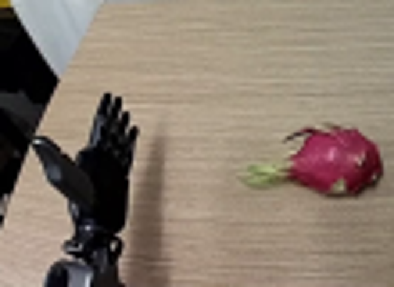
视觉工具实际返回图片 3
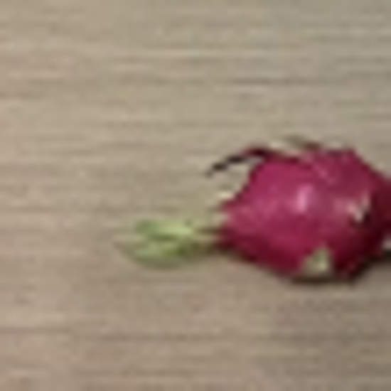
视觉工具实际返回图片 4
视觉工具实际返回图片 5
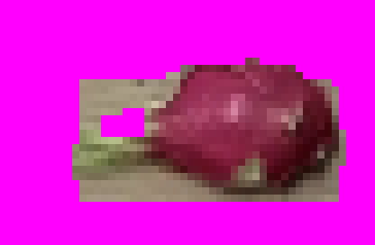
视觉工具实际返回图片 6
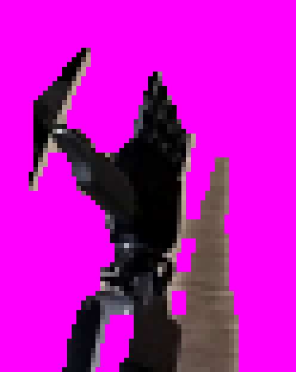
视觉工具实际返回图片 7
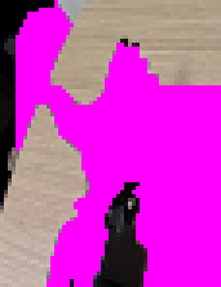
视觉工具实际返回图片 8
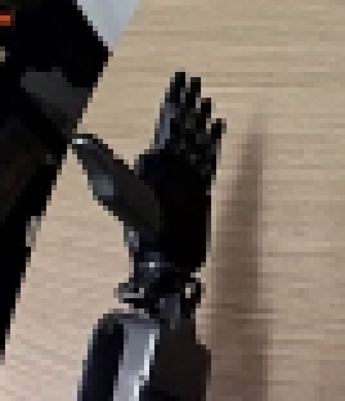
视觉工具实际返回图片 9
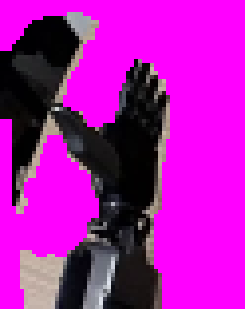
视觉工具实际返回图片 10
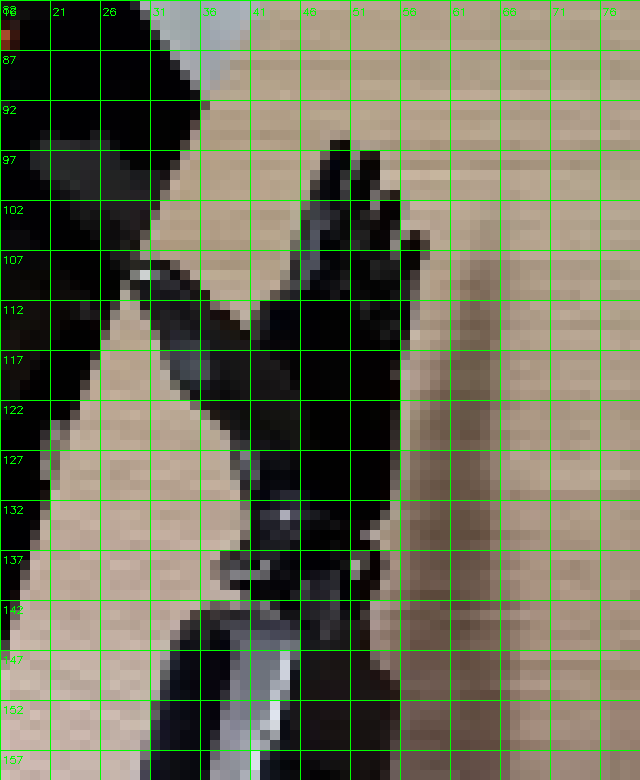
视觉工具实际返回图片 11
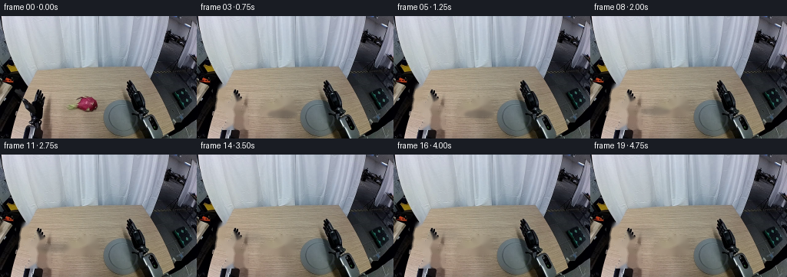
视觉工具实际返回图片 12
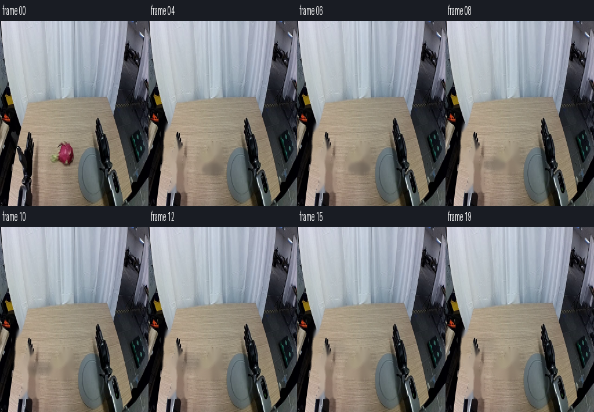
视觉工具实际返回图片 13
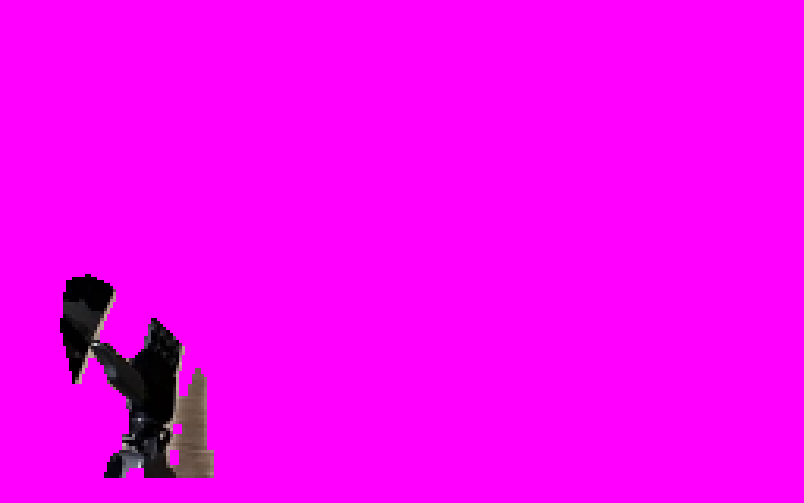
视觉工具实际返回图片 14
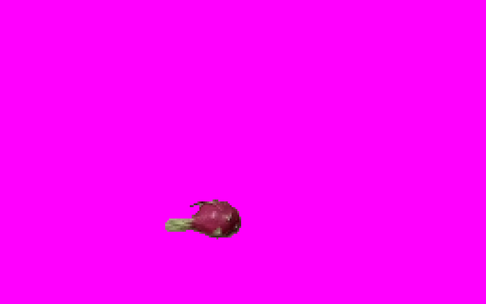
视觉工具实际返回图片 15
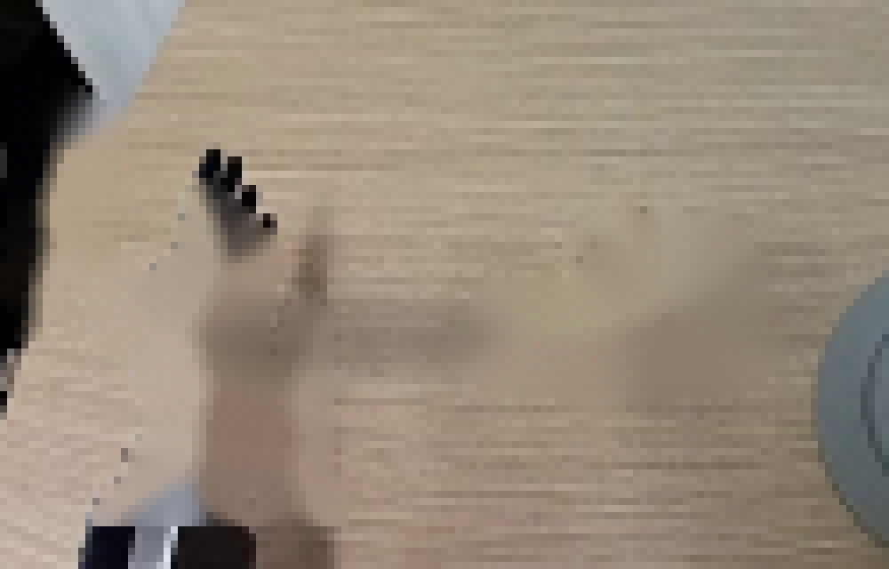
视觉工具实际返回图片 16
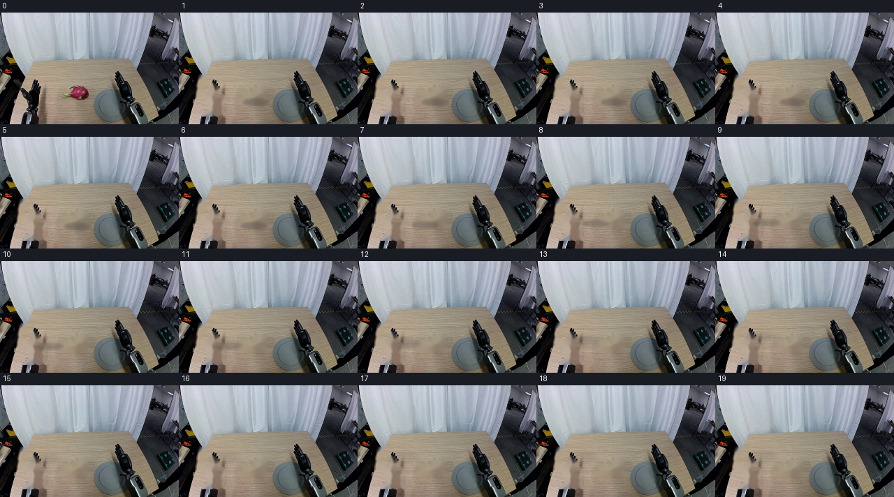
视觉工具实际返回图片 17
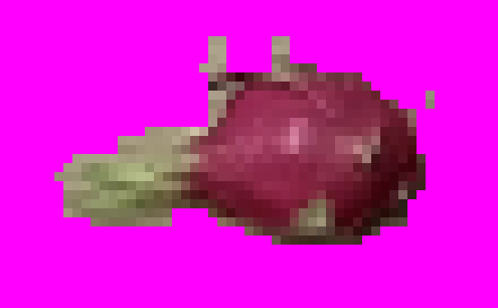
视觉工具实际返回图片 18

视觉工具实际返回图片 19
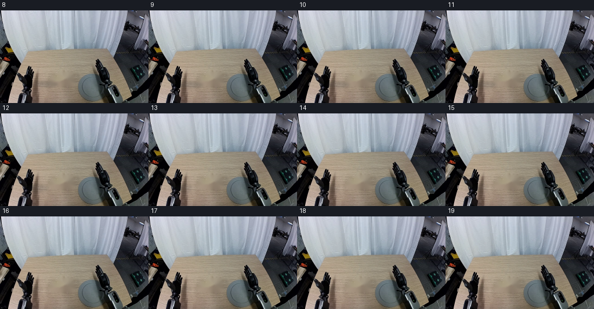
保存候选 2 份；完成命令 38 次；可验证图片返回 19 张。原始 API 响应与完整日志保留在本地。